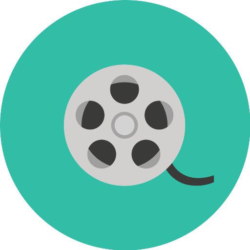

MÚSEO DE CINE E INFANCIA


Nació en la ciudad de Buenos Aires el 29 de octubre de 1963. Desde muy joven incursionó en distintas áreas relacionadas con el arte y la cultura. Con solo 15 años participó en la primera bienal internacional del humor y la historieta, siendo el participante más joven de dicho evento. En esos tiempos comenzó su carrera como dibujante e historietista, trabajando en la revista Anteojito. Aquí se destacó dibujando a los personajes de esta empresa y publicando historietas con personajes propios como Canibaldo y Fantomenos, entre otros. Aquí también comenzó su carrera como animador en la tira El mundo de Calculín, que se emitía por canal 13.
Marcelo de los Ríos
Más información
